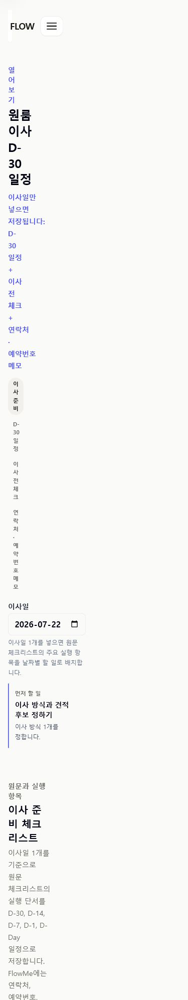
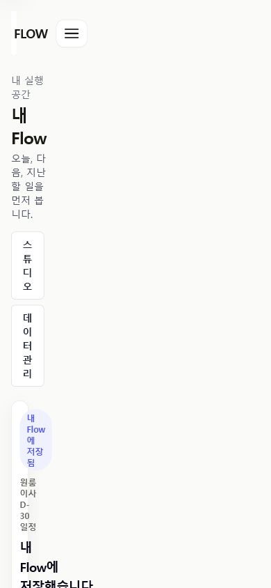
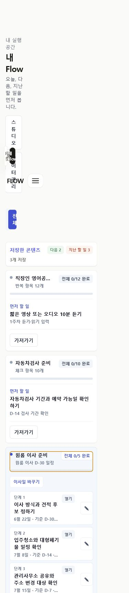

설명으로 보충
moving과 public 화면은 저장 artifact 대신 비슷한 promise를 여러 문장으로 반복합니다.
기능을 더 붙이기 전에 사용자가 전체 Flow를 보고, 필요한 만큼 고치고, 저장 결과를 확인한 뒤 Today와 Calendar로 이동하는 한 흐름을 검증합니다.
전체 판정
문구 몇 줄만 줄이는 것으로는 부족합니다. post-save 전체 확인, save-versus-adjust, My Flow/Calendar 역할이 함께 어긋나 있습니다.
전면 재작성도 필요하지 않습니다. 4탭, personal overlay, completion, Calendar/export 계약은 유지하고 첫 여정의 다섯 장면만 다시 설계합니다.
왜 다시 봐야 하나
moving과 public 화면은 저장 artifact 대신 비슷한 promise를 여러 문장으로 반복합니다.
저장 직후 Today slice가 먼저 보여 전체 Flow가 제대로 들어왔는지 확인하기 어렵습니다.
My Flow 범위 선택, Calendar, 날짜 없는 목록과 held 콘텐츠가 ordinary execution 흐름에서 경쟁합니다.
대안 비교
위험: 저장 결과 확인과 save/adjust 경계 문제는 남습니다.
검증 필요: 전체 preview가 저장을 늦추지 않는지 10분 prototype으로 확인합니다.
가설 wireframe
2개 일정 더 보기
제목·메모·세부 날짜는 저장 후에도 바꿀 수 있습니다.
이사일 8월 4일 · 전체 4개
완료한 일은 바로 되돌릴 수 있습니다.
실행 보류 콘텐츠는 이 화면에 표시하지 않습니다.
현재 화면 근거



단계별 진행
이번에 답할 질문